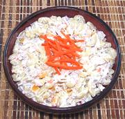

|
Macaroni SaladPhilippine - Macaroni Salad | ||||
| Makes: Effort: Sched: DoAhead: |
4 # ** 2+ hrs Best |
"Macaroni Salad" doesn't sound too inspiring, but this Philippine adaptation is exceptional. It has become almost as essential as lumpia for any Filipino party or family gathering. | |||
|
12 ar 1 5 9 2 3 4-1/2 3 1 1-1/2 1 1/2 1/3 |
oz oz oz oz oz oz T oz # t t |
Chicken Meat (1) Water Bay Leaf Peppercorns Macaroni (2) Carrots Onions, red Pineapple rings Cheddar Cheese Pickle Relish Raisins, golden Mayonnaise Salt Pepper |
This salad can be made the previous day and refrigerated. I use a rather small macaroni, if you use a larger one, cut everything else just a little larger. Make - (35 min work - plus cooling time)
|